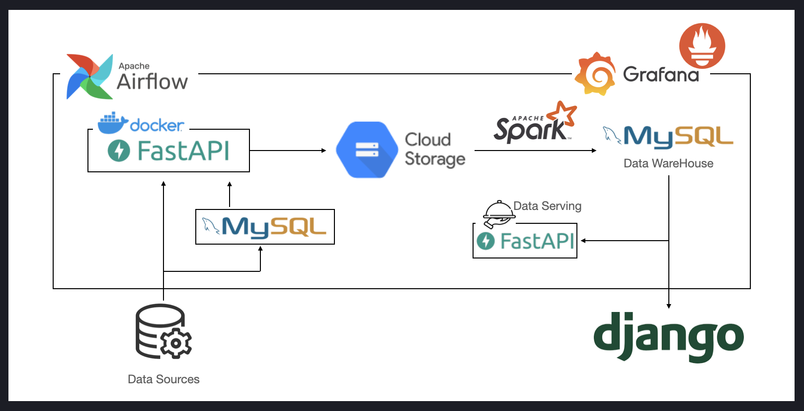
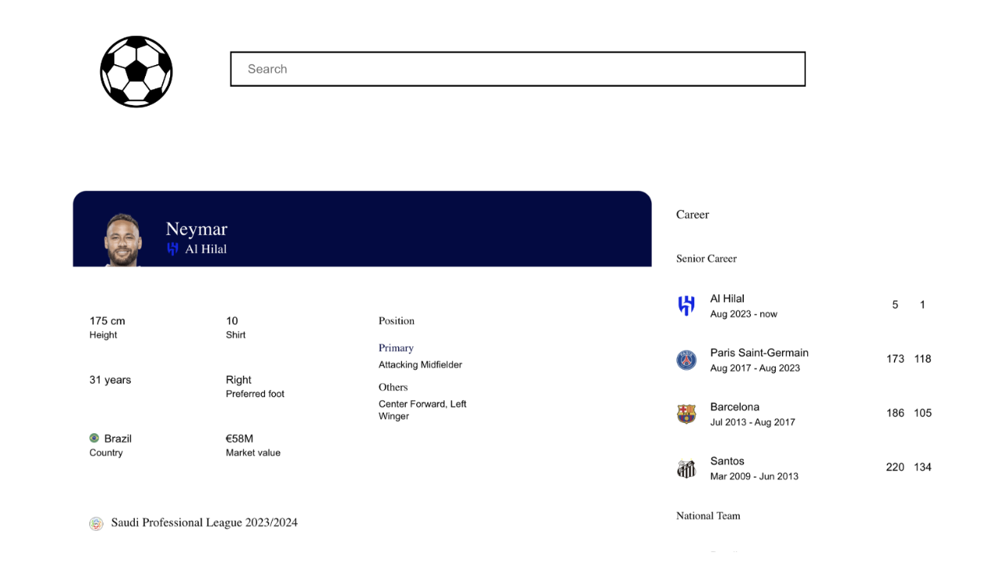
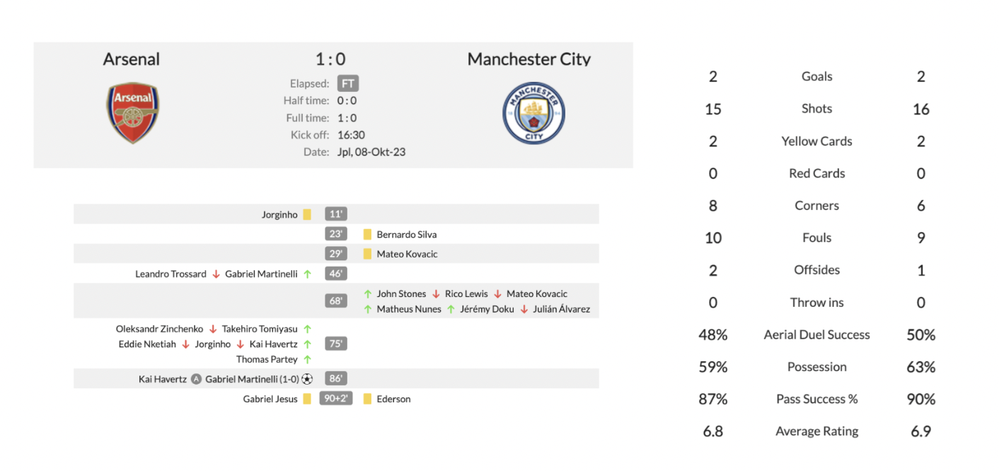
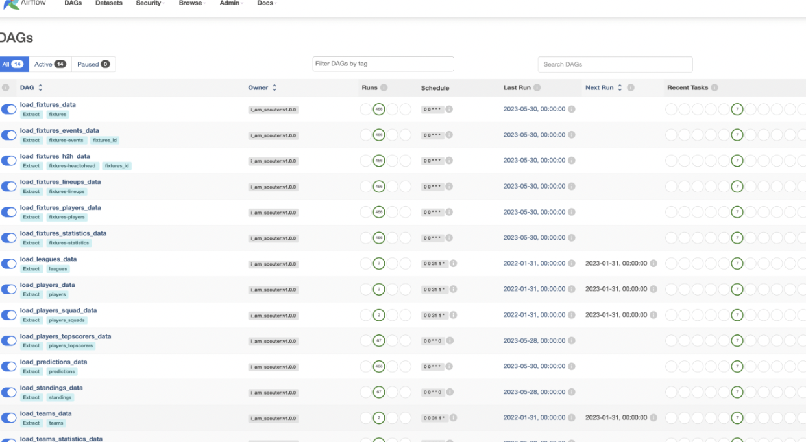
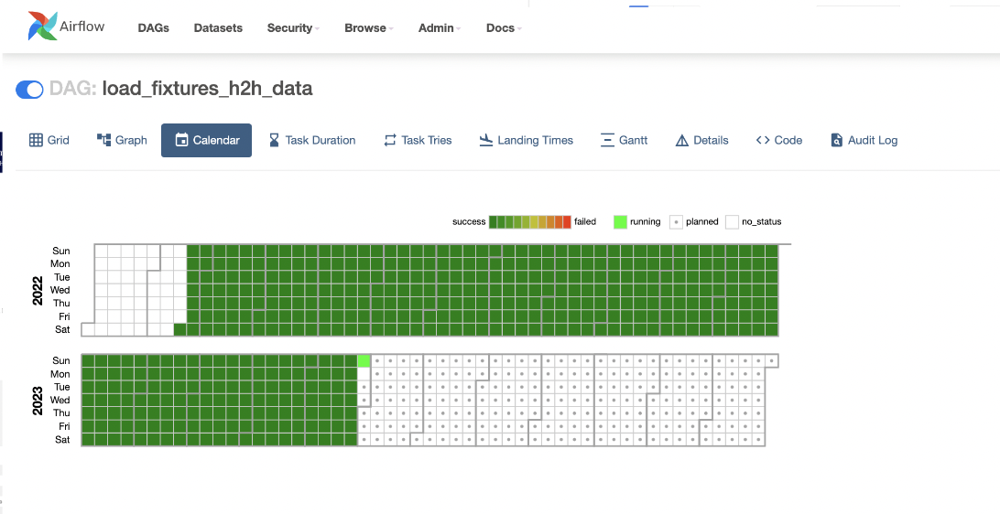

프로젝트 소개
Problem
평소에 축구를 좋아하여 Opta-sports 등의 데이터 분석 서비스에서 정보를 확인했습니다.하지만 이런 서비스들의 유료화 정책 이후 정보 수집에 어려움이 있었고, 나 뿐만 아니라 이런 어려움을 느끼는 사람들이 더 있을 것이라 생각했습니다.
유료 서비스를 사용할 수 없는 사람들에게도 유망주 발굴이 가능하고 변방 리그의 경기 데이터까지 확인할 수 있는 대시보드 구축을 목표로 지정했습니다.
- 대형 서비스의 유료화
- 대형 포탈사이트의 변방 리그 루키 선수 정보 미기재
- 변방 리그 리스 스탯 확인 불가
Solution
Football-API 사용하여, 데이터를 수집하였으며,리그, 팀, 선수, 경기 단위에 데이터를 한 눈에 확인할 수 있는 데이터 대시보드를 제작했습니다.<서비스 데이터>
- 전세계 55개 리그- 등록선수 26,000 + 명
- 처리경기 50,000 경기
<주요기능>
- 리그별 축구 경기 결과 실시간 리포트- 선수별 이력 & 스탯 & 리포트
프로젝트 아키텍처 & 기술스택

집중 기술 스택
개발 과정
GITHUB : Github로 이동합니다팀원 : 3명
역할 : 데이터 수집 및 처리
도전과제
- 유료 API를 통해 데이터를 수집하는 중 예기치 않은 에러로 데이터 적재에 문제가 발생하고, 데이터 유실로 이어지는 상황이 발생했습니다.
유료 API를 통해 제공받는 축구 경기 결과 데이터는 데이터 수집 전 경기 일정 변동점을 체크할 수 있는 분기 로직을 추가로 구현하였으며, 적재 되는 데이터 형태를 일원화 하기위해 데이터를 임시 적재 후 해당 데이터의 Key 값을 통일화하는 백오피스 구현을 통해 대시보드 구현시 동일한 Key 값으로 데이터를 사용 할 수 있게 개발하였습니다.
따라서, 월 100회 이상 발생하는 적재 중 오류 빈도를 월 10회 이하로 약 90% 줄였습니다.
- 기존 데이터 수집은 python script로 기능을 구현하여 수집 서버 cronjob 등록을 통해 데이터를 저장하였습니다.
- Airflow에 비즈니스 로직을 배포하였는데, 특정 데이터 파이프라인 부하로 인해 모든 수집 파이프라인이 멈추는 상황이 발생했습니다.
flower 등 사용하지 않는 Airflow 컴포넌트를 덜어내고, 기존 Airflow에 구현되어있는 비즈니스 로직을 API 서버로 이관하였습니다.
flower의 기능을 수행하기 위해 수집 중 에러 발생 시 SNS 알림 전송 봇 (개발기 : 보러가기), 서버 자원 모니터링 대시보드 구축 (구축기 : 보러가기), 수집 자동화를 위한 적재 재시도 하는 백오피스 개발을 진행하였습니다. 또한, 일 500개+ 적재하는 비정형 데이터의 무결점성을 위해 플래그성 분기점을 추가함으로써, 주 3시간 정도 소모되는 루틴성 주기 수집업무를 약 20분 내외로 줄인 경험이 있습니다.
결과물
서비스 사진


운영 사진


인사이트
배운점
- 다중의 서버간 통신 및 보안- 복잡한 Layer의 json 데이터 가공 & 처리
- 각 기술의 Trade-off에 대한 고찰
직접 발로 뛰고, 고민하여 개발하였으며, 새로운 새로운 분야라도, 요구사항과 개발의 원리를 생각하고 고민하면, 어떠한 문제도 해결 할 수 있다 라는 자신감이 생기게 되는 계기가 되었습니다.
아쉬운점
- 데이터 서빙 API에 대한 실제 대형 트래픽전처리 후 적재된 데이터를 외부로 서빙하는 과정에서 nGrinder 를 통하여, TPS 부하 테스트를 진행하였으나, 실제 오가닉 트래픽이 발생하지는 않았습니다. 유저 트래픽에 대한 다양한 변수를 대응해보지 못한 점에 대한 아쉬움이 남습니다.
- 실시간 이벤트 스트리밍
I'm scouter 서비스는 배치 ETL 파이프라인 아키텍쳐입니다.매일 수집된 데이터는 익일 새벽에 처리 되고있습니다. 하지만, 개별적 경기상태에 대한 스트리밍 처리를 해보지 못한것에 아쉬움이 남습니다.
- 배포 및 테스트 세분화 된 스테이징
모든 프로젝트 코드는 Git를 통해 관리하였습니다. 개발 - 테스트 - 배포 에 스테이징 과정을 세분화하여, 관리하지 못한 점이 아쉽습니다.